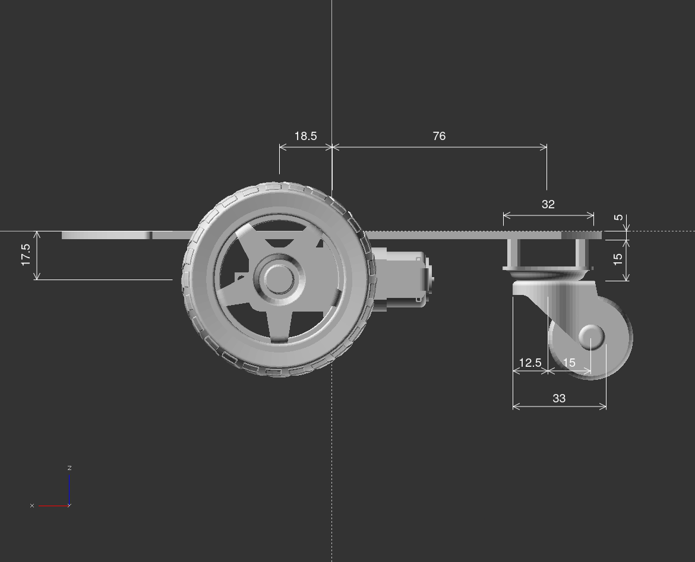
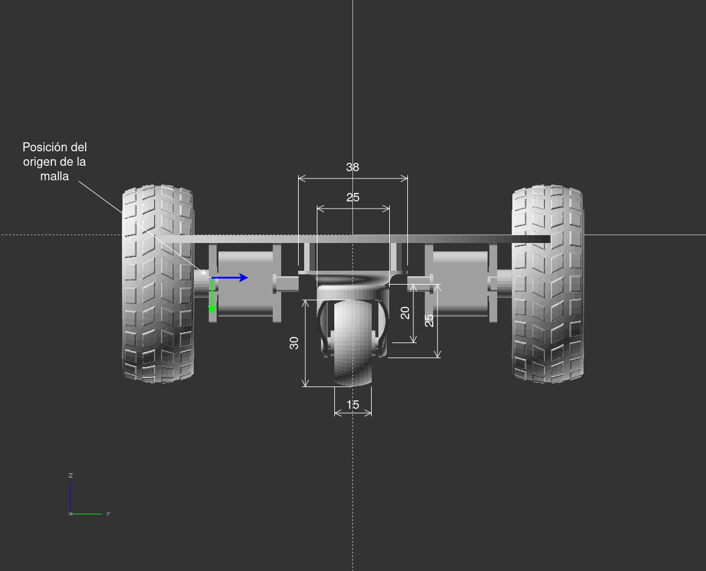
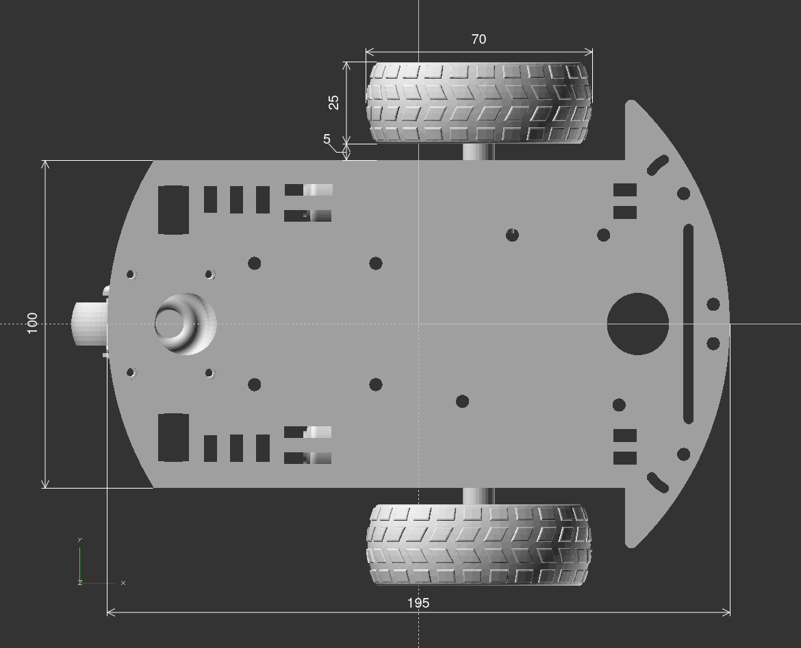

Fecha de entrega: 22 de Junio
Formato de entrega: Archivo comprimido con el código fuente de los paquetes. Formato pdf en caso de necesitar entregar ejercicios de desarrollo. Proveer en un archivo de texto
README.mdlos comandos necesarios para la ejecución de el/los paquete/s para los ejercicios.Archivos disponibles:
entregable-1.zip- Carpeta
meshescon archivos.stlpara las geometrías visuales de los componentes del robot. - Carpeta
urdfcon dos archivos:inertial_macros.xacrocon definición de inercias y materiales de ejemplo;motor.xacrocon macro para insertar un motor en el robot.
- Carpeta
Ejercicios
URDF
Crear un paquete de ROS llamado (*)_description para albergar el robot description siguiendo la estructura vista en clases. Crear un archivo de definición del robot en formato XACRO respetando la geometría representada en las vistas del anexo y cumpliendo con los siguientes requerimientos:
- Debe contener al menos un
base_linkasignado al chasis del robot y un link y un joint por cada rueda - Cada link deberá tener definida la geometría visual y de colisión, según la tabla correspondiente del anexo
- Debe estar parametrizado al menos el radio de las ruedas de tracción y la separación de las mismas
- En caso de poder reutilizar bloques, hacer uso de macros
- Utilice el macro
motorimportando el archivomotor.xacropara ubicar el motor izquierdo y derecho. El macro recibe 3 parámetros:prefix(String): para diferenciar el link con un prefijochassis_width(Double): ancho del chasisreflect(Bool): No reflejar (False) o sí reflejar (True). La orientación original es hacia la izquierda
En el mismo paquete, crear un archivo launch de nombre description.launch.py, en el cuál se deberá procesar el archivo XACRO con la descripción del robot y se deberá publicar la misma a través del paquete robot_state_publisher. El launch deberá recibir, a través de un parámetro de tipo bool llamado testing, la condición para ejecutar o no el paquete joint_state_publisher_gui y RViz.
Este archivo será útil para probar el archivo del ejercicio anterior, por lo que se recomienda realizarlos en paralelo
Gazebo
Editar el o los archivos XACRO del ejercicio 1, de manera que sea/n compatible/s con los requerimientos de Gazebo, haciendo uso de los macros disponibles en el archivo inertial_macros.xacro.
Crear un paquete (*)_gz y un archivo launch nuevo, que ejecute Gazebo, procese la descripción del robot y, utilizando el ejecutable spawn_entity.py, cargue el robot en el simulador. Puede reutilizar el archivo creado en el ejercicio 2 incluyéndolo (no debe ejecutar el joint_state_publisher_gui ni RViz).
ROS2 control
Editar el archivo de definición del robot y agregar los elementos necesarios para configurar ROS2 control y Gazebo de forma tal que las juntas correspondientes a las ruedas de tracción reciban comandos de velocidad y devuelvan el estado de posición y velocidad. Para esto deberá añadir los tags <ros2_control> y <gazebo>.
Crear un paquete (*)_control, con una carpeta config y un archivo de configuración en formato YAML con los parámetros necesarios para que el controller_manager de ROS2 control cargue un JointStateBroadcaster y dos controladores de velocidad de tipo JointGroupVelocityController, uno para cada rueda de tracción.
Editar el archivo launch del ejercicio 3 para invocar al comando load_controller de ros2_control y cargar los controladores del inciso anterior.
Cinemática
Calcular la velocidad lineal y angular del robot y de las ruedas para que se complete:
- una trayectoria recta de 1[m] en 10 [s].
- una trayectoria circular con un radio de 0.5 [m] en sentido horario en 20 [s].
Examinar la definición de los mensajes de tipo geometry_msgs/Twist y describir cuál sería la secuencia de comandos de velocidad a aplicar al robot para seguir la trayectoria mostrada en la Figure 1 utilizando dichos mensajes. La velocidad máxima de giro de los motores es de \(50 [rpm]\).

El punto inicial del robot será asignado por el docente.
Examinar la definición de los mensajes del topic suscripto por el JointGroupVelocityController. Calcule las velocidades angulares de las ruedas para cada comando del ejercicio 6 y construya la secuencia de mensajes de comando correspondientes.
El campo layout no se debe completar.
Dentro del paquete (*)_control, cree un nodo que reciba comandos de tipo geometry_msgs/Twist a través de un topic llamado cmd_vel, calcule las velocidades angulares en base al modelo cinemático inverso del robot y escriba los comandos de velocidad de cada rueda de tracción en los topics left_wheel_cmd y right_wheel_cmd. Tenga en cuenta que los parámetros del robot se encuentran en el robot description.
Odometría
Crear un nodo (en el mismo paquete que el ejercicio anterior o por separado) que lea el o los topics de posición de las juntas de las ruedas (publicados por el JointStateBroadcaster), calcule la odometría basado en el modelo cinemático directo del robot y publique la misma en el topic \odom con mensajes de tipo nav_msgs/Odometry. El nodo debe recibir como parámetro las dimensiones geométricas del modelo cinemático y los nombres correspondientes a las juntas de las ruedas de tracción.
El campo twist y covariance en pose no se deben completar para el mensaje nav_msgs/Odometry.
Cree un nuevo paquete (*)_bringup con un archivo launch en el cual se cargue todo el sistema desarrollado (URDF, Gazebo, los controladores de ROS2 control) y los nodos de los ejercicios 8 y 9. Recuerde configurar correctamente los parámetros y topics de cada nodo. Puede probar que el robot se encuentra funcionando utilizando el teleop_twist_keyboard o publicando mensajes de Twist como los del ejercicio 5 o 6.
ROS 2 y tf2
(Opción A) Crear un nodo que publique la transformación entre los frames
odomybase_linka partir de los mensajes del topic/odom. Agregar la ejecución del mismo al launch del ejercicio anterior.(Opción B) Modificar el nodo del ejercicio 9 para que que publique la transformación entre los frames
odomybase_link. Agregar un parámetro para que cuando no se requiera esta transformación, no se publique.
Cree un archivo launch en el paquete (*)_bringup que extienda (inclusión o copia) al del ejercicio 10 y añada la ejecución de RViz junto con su respectivo archivo de configuración, el cual muestre el robot en el frame odom y las transformaciones de todos los links definidos en el URDF.
Anexo A



| Componente | Masa [g] | Largo [mm] | Ancho [mm] | Alto [mm] | Mesh |
|---|---|---|---|---|---|
| Chasis | 800 | 195 | 100 | 5 | chassis.stl |
| Motor | 100 | 70 | 188 | 225 | motor.stl |
| Ruedas | 150 | 70 | 25 | 70 | wheel.stl |
| Base rueda giratoria | 20 | 32 | 38 | 15 | caster_base.stl |
| Base giratoria | 20 | 33 | 25 | 25 | caster_wheel_ support.stl |
| Rueda giratoria | 10 | 15 | 15 | 15 | caster_wheel.stl |